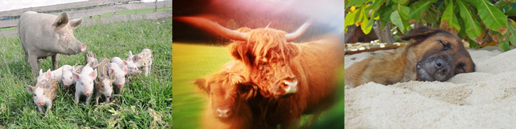

Wir sind den Tieren sehr ähnlich und umgekehrt. Wir Menschen fühlen genauso wie die Tiere Dankbarkeit, Freude, Trauer, Kummer, Schmerz, etc. und merken, dass Tiere ebenfalls Wünsche und Bedürfnisse haben. Immer wieder verblüffen uns die Tiere aufs Neue. Man entdeckt erstaunliche und faszinierende Verhaltensmuster, soziale Gefüge und Spielregeln denen die Tiere folgen. Immer wieder stellt man fest wie außergewöhnlich klug die Tiere doch sind. Sie sind neugierig, verspielt und liebesbedürftig. Genetisch sind wir zu über 98% identisch mit dem Schwein. Vergleicht man die Embryos der Tiere mit denen der Menschen, sieht man, dass sie sich beinahe gleichen.
Wir haben die gleichen Grundbedürfnisse, wie Essen, Trinken, Schlaf und Sexualität sondern auch die selbe Sehnsucht nach Glück, Liebe und Geborgenheit.

Unterschiede
Der größte Unterschied zwischen Tier und Mensch ist aber vor allem der, dass wir Menschen in einem viel geringeren Maß an unseren Instinkt und unsere Triebe gebunden sind, sondern relativ frei entscheiden können was wir tun wollen. Zwar verfügen auch die höheren Tiere über eine gewisse Entscheidungsfähigkeit, die Menschen sind aber besonders begabt unser Leben bewusst zu gestalten und zu verändern.
Das Zeigt sich einerseits in der Kultur, die wir Menschen entwickelt und erfunden haben als auch daran, dass es unser Intellekt vermag unsere Triebe ganz gezielt zu beherrschen.
Wir können somit relativ leicht ein sogenanntes höheres Bewusstsein entwickeln, weil wir einen freien Willen haben.
Und gerade weil wir Menschen außergewöhnlich und besonders sein können, haben wir die Möglichkeit schwächere Lebewesen zu beschützen. Wir können sie als Mitgeschöpfe, als lebende und fühlende Wesen, anerkennen und beschützen. Wir können ihnen Achtung, und Wertschätzung zukommen lassen sie akzeptieren und respektieren. Denn die lieben Tiere sind einzigartig, bewundernswert und toll.
Die eigentliche Frage muss sich trotz allem jeder selbst stellen: Ist es für mich legitim, dass andere Lebewesen für mein Leben - meinen Genuss Leid erfahren?
"The birth of the spoonrevolution"
... was wäre, wenn uns die Tiere das antun,
was wir Menschen den Tieren antun?